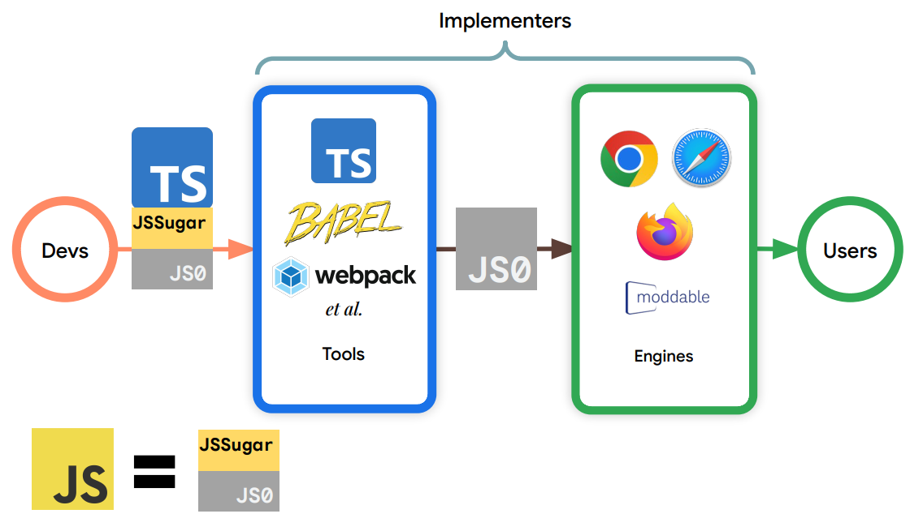

6. Próximos Pasos en JavaScript

6.1 Líneas Estratégicas de Desarrollo
Principales áreas de enfoque para la evolución de JavaScript:
- WebAssembly: Integración más profunda y optimización
- Seguridad: Mejoras en tiempo de ejecución
- Simplicidad: Reducción de complejidad del lenguaje
- Colaboración: Fortalecimiento de la comunidad de desarrollo
6.2 Integración de WebAssembly
Profundizar la integración de WebAssembly para mejorar el rendimiento y la interoperabilidad entre lenguajes en entornos web.
- Optimización de la comunicación entre JavaScript y WebAssembly
- Mejora de las capacidades de compilación
- Expansión de casos de uso
6.3 Mejoras de Seguridad
Implementar mejoras significativas en la seguridad del tiempo de ejecución:
- Nuevos mecanismos de aislamiento
- Reducción de vectores de ataque
- Mejora de las políticas de ejecución de código
6.4 Compromiso con la Evolución
Evolución responsable de JavaScript, manteniendo flexibilidad y poder expresivo.
7. Conclusiones Finales
7.1 Pilares Fundamentales
Principios clave para el futuro de JavaScript:
- Innovación: Compromiso continuo con el desarrollo
- Equilibrio: Balance entre nuevas características y estabilidad
- Adaptabilidad: Evolución constante del desarrollo web
- Ecosistema: Comunidad abierta y colaborativa
7.2 Impacto en el Desarrollo de Software
JavaScript se consolida como un lenguaje dinámico y fundamental en el desarrollo de software moderno.
- Versatilidad en diferentes entornos
- Adopción global
- Capacidad de adaptación continua
7.3 Visión de Futuro
El ecosistema de JavaScript continuará evolucionando, impulsado por una comunidad innovadora y comprometida con la excelencia técnica.
7.4 Llamado a la Acción
Invitación a desarrolladores, empresas y comunidades tecnológicas a participar activamente en la evolución del lenguaje.